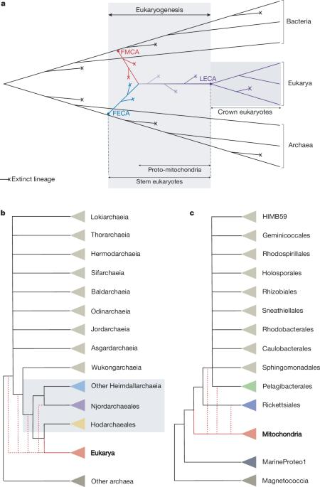
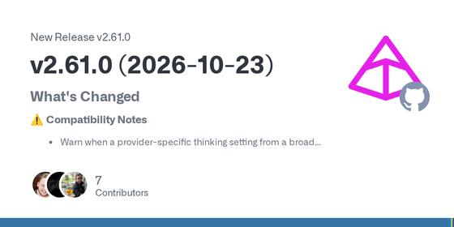
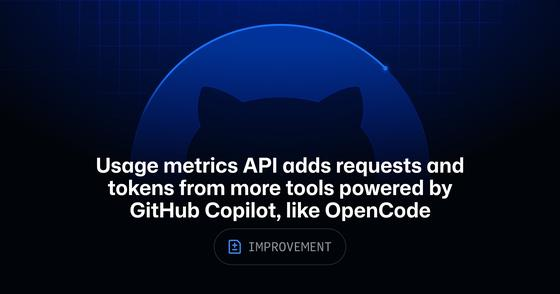
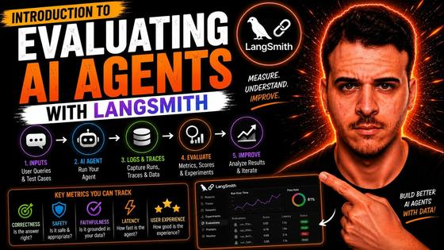
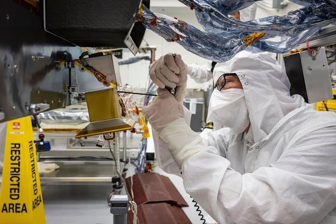
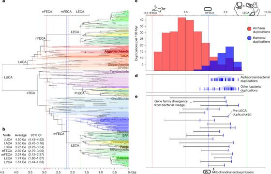
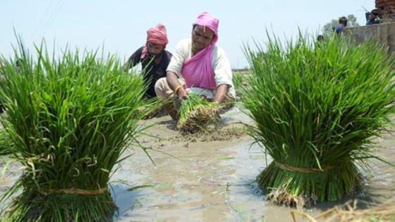

Executive Synthesis: From bioenergetic constraints on complex life and audits in agent evaluation to Big Tech earnings week, autumn keto cooking, and festival-season Telugu premieres.
Don't Miss
| arXiv: | 4 days ago · 12m |
Takeaway: This is directly useful for your agent-evaluation benchmark builder: it makes oracle integrity, state restoration, and replay checks concrete audit targets.
| NASA Science: | 3 days ago · 3m |
NASA’s Hubble Charts Path for Roman with Gravitational Lenses
—
NASA released a Hubble gravitational-lens image as preparatory work for the Nancy Grace Roman Space Telescope. The foreground elliptical galaxy is about 4.5 billion light-years away; the magnified background galaxy is about 8 billion light-years away and appears as two arcs. NASA says Hubble images are helping refine a computer model for analyzing distortions and dark matter in Roman’s wider survey.
Takeaway: A concrete look at gravitational lensing connects your astronomy and dark-matter interests with how Roman’s wide-field observations will extend this work.
| Nature: | · 8m |

The Emerging View on the Origin and Early Evolution of Eukaryotic Cells — A milestone synthesis reviewing phylogenetic, biochemical, and cellular evidence for the origins of eukaryotes. Synthesizes data placing the host within Asgard archaea and analyzes the metabolic interactions that stabilized the ancestral mitochondrial endosymbiont.
Takeaway: Core foundational literature supporting today's mitochondrial deep dive and cell evolution theme.
| Yahoo Finance Calendar: | yesterday · 2m |
Takeaway: Essential dates and times for the quarterly reports that define tech infrastructure and cloud valuations.
| Times of India: | yesterday · 3m |
Takeaway: Streaming debut dates and box office longevity for the biggest Telugu release of the season.
| GitHub Changelog: | 2 days ago · 2m |
GitHub Copilot in Teams can turn issue notifications into pull requests
—
GitHub's consolidated Teams app lets users act on issue notifications with Copilot: mention `@GitHub` to investigate a bug report, make a fix, and create a pull request in the conversation. Existing notification capabilities remain. GitHub says the legacy app will retire on November 16, 2026, so users need the consolidated app to continue using Copilot in Teams.
Takeaway: This adds an in-conversation Copilot workflow to the AI coding and agent tools you follow.
Industry Watch →
Audits expose oracle flaws in agent benchmarks, while coding tools extend in-conversation pull-request automation and trace-level evaluators.
| arXiv: | 4 days ago · 12m |
Takeaway: This is directly useful for your agent-evaluation benchmark builder: it makes oracle integrity, state restoration, and replay checks concrete audit targets.
| arXiv / Stanford University: | Oct 15 · 10m |
Takeaway: Core research methodology underpinning automated prompt compilers and trace optimization.
| arXiv: | Oct 2 · 18m |
Takeaway: This is directly relevant to your LLM-as-judge reliability work because it distinguishes apparent recall from actual fault discrimination.
| GitHub Changelog: | 2 days ago · 2m |
GitHub Copilot in Teams can turn issue notifications into pull requests
—
GitHub's consolidated Teams app lets users act on issue notifications with Copilot: mention `@GitHub` to investigate a bug report, make a fix, and create a pull request in the conversation. Existing notification capabilities remain. GitHub says the legacy app will retire on November 16, 2026, so users need the consolidated app to continue using Copilot in Teams.
Takeaway: This adds an in-conversation Copilot workflow to the AI coding and agent tools you follow.
| Pydantic AI GitHub releases: | yesterday · 7m |

Pydantic AI 2.61 adds hosted MCP authentication and citation support — Pydantic AI 2.61.0 adds async `auth` functions for hosted MCP capabilities, structured citations in `TextPart`, and citation normalization for Bedrock, OpenRouter, and xAI. It also hardens `InputGuardrail` prompt redaction to close fail-open paths. The changelog groups these with realtime, durable-run, and framework fixes.
Takeaway: This release is directly relevant to the Pydantic AI and MCP components among the agent tools you follow.
| GitHub Changelog: | 2 days ago · 3m |

GitHub Copilot metrics now attribute model usage to tools such as OpenCode — GitHub added a `totals_by_client` array to Copilot usage reports, breaking model requests and token usage down by client for 1-day and 28-day reporting windows. Recognized clients include OpenCode, Claude Code, and Codex. The API counts successful model requests, not prompts, and also reports sessions and model-selection modes.
Takeaway: This improves visibility into Copilot model activity from OpenCode, Claude Code, and Codex—the coding tools you follow.
| ServiceNow Press Room: | 2 days ago · 5m |
Takeaway: Relevant to autonomous incident response and trace-informed decision making in enterprise operations.
| Microsoft Official Blog: | 5 days ago · 4m |
Takeaway: Monitors competitor platform architecture in enterprise multi-agent coordination.
| LangChain: | Sep 10 · 5m |
Build an Online LLM-as-a-Judge with the LangSmith CLI and a Coding Agent
—
Walkthrough demonstrating how to configure online evaluators using the LangSmith CLI and coding agents. Shows how to inspect agent traces in production, define evaluation rubrics with structured output schemas, and score streaming tool invocations.
Takeaway: Directly connects to your core focus on agent evaluation, LLM-as-judge harnesses, and trace observability.
| LangChain: | Sep 12 · 15m |

Introduction to Evaluating AI Agents with LangSmith — Covers foundational principles of evaluating multi-step AI agents: setting up golden datasets, measuring trajectory-level tool accuracy, detecting hallucinations in intermediate thoughts, and tracking regression metrics across prompt revisions.
Takeaway: Relevant to building robust benchmark suites and regression tracking for agent workflows.
Markets and Money →
| Bloomberg: | yesterday · 4m |
Takeaway: Monitors supply chain constraints and semiconductor capital expenditures on your US tech radar.
| TheStreet Pro: | yesterday · 3m |
Takeaway: Tracks enterprise SaaS valuation trends and corporate buyer sentiment across followed software names.
| The Wall Street Journal: | yesterday · 4m |
Takeaway: Tracks macro interest rate expectations and sovereign yield movements shaping equity valuations.
| The Economic Times: | yesterday · 4m |
Nifty 50 and Sensex Close Firm Ahead of Festive Diwali Season with Strong DII Support
—
The Nifty 50 finished Friday trade up 140 points at 24,850, led by gains in private banking and automotive stocks. Domestic Institutional Investors recorded net inflows of Rs 3,200 crore, absorbing foreign portfolio sales ahead of Samvat 2083 festive sessions.
Takeaway: Headline index levels, flow metrics, and market tone for Indian equities heading into Diwali.
| Reserve Bank of India: | 2 days ago · 3m |
Takeaway: Official central bank data on India's external buffers and currency stability.
| The Hindu BusinessLine: | yesterday · 4m |
Capital Goods and Power Equipment Manufacturers Maintain Healthy Margins in Q2
—
Second-quarter results from leading engineering and transmission equipment firms showed revenue growth of 14% to 18% year-on-year, supported by national grid upgrade contracts and industrial capex.
Takeaway: Covers capital goods and infrastructure capex themes followed in your India watch list.
| Yahoo Finance Calendar: | yesterday · 2m |
Takeaway: Essential dates and times for the quarterly reports that define tech infrastructure and cloud valuations.
| BSE India Official: | 2 days ago · 2m |
Takeaway: Key seasonal calendar event and official operating schedule for Indian capital markets.
| New York Stock Exchange: | yesterday · 2m |
Takeaway: Official exchange schedule and Treasury auction calendar for the week ahead.
| Bloomberg Television: | 2 days ago · 3m |
Hidden Rallies Emerge From Tech Selloff: Market Analysis
—
Bloomberg market correspondents analyze internal breadth in US equities, highlighting rotations from mega-cap tech into utilities, industrial infrastructure, and financial sectors. Explores how Treasury yield stability around 4.2% is shaping risk premiums.
Takeaway: Provides concise, macro-level market context for US equities and sector rotation trends.
| Bloomberg Television: | 4 days ago · 96m |
SpaceX Results Reignite AI Trade, Meta Results on Deck
—
Examines quarterly earnings momentum in datacenter hardware, power supply chain logistics, and cloud capex expectations ahead of upcoming Big Tech reports from Alphabet, Microsoft, and Meta.
Takeaway: Tracks datacenter capex and tech earnings momentum relevant to your US markets watch list.
Latest Radar
Bloomberg:
yesterday · Markets and Money
TheStreet Pro:
yesterday · Markets and Money
The Economic Times:
yesterday · Markets and Money
Reserve Bank of India:
2 days ago · Markets and Money
Yahoo Finance Calendar:
yesterday · Markets and Money
BSE India Official:
2 days ago · Markets and Money
Bloomberg Television:
2 days ago · Markets and Money
Bloomberg Television:
4 days ago · Markets and Money
Frontiers in Physiology:
7 days ago · Keto Kitchen
Frontiers in Molecular Neuroscience:
6 days ago · Keto Kitchen
Telugu Cooking Channel:
arXiv / Stanford University:
Oct 15 · Industry Watch
GitHub Changelog:
2 days ago · Industry Watch
Pydantic AI GitHub releases:
yesterday · Industry Watch
ServiceNow Press Room:
2 days ago · Industry Watch
Microsoft Official Blog:
5 days ago · Industry Watch
LangChain:
Sep 10 · Industry Watch
UCL / Academic Lectures:
Institute of Art and Ideas:
NASA Science:
3 days ago · Cosmos and Life
Nature:
Dec 3 · Cosmos and Life
Space Telescope Science Institute:
7 days ago · Cosmos and Life
NASA Goddard:
Jul 31 · Cosmos and Life
BBC News:
yesterday · World and India
Deutsche Welle:
yesterday · World and India
The Hindu:
yesterday · World and India
The Indian Express:
yesterday · World and India
DW News:
Dec 17 · World and India
Al Jazeera English / Counting the Cost:
Dec 26 · World and India
BWF World Tour:
yesterday · Sports
ESPNcricinfo:
yesterday · Sports
Premier League:
yesterday · Sports
Times of India:
yesterday · Movies and Music
123Telugu:
yesterday · Movies and Music
Times of India Music:
yesterday · Movies and Music
The Hindu Music:
yesterday · Movies and Music
BookMyShow:
yesterday · Movies and Music
BookMyShow:
yesterday · Movies and Music
San Jose Theaters:
2 days ago · Movies and Music
Montalvo Arts Center:
3 days ago · Movies and Music
Netflix Tudum:
2 days ago · Movies and Music
Polygon:
2 days ago · Movies and Music
Sithara Entertainments:
City of San Jose Parks:
yesterday · Local and Travel
City of Santa Clara:
2 days ago · Local and Travel
National Park Service:
2 days ago · Local and Travel
Caltrans District 5:
2 days ago · Local and Travel
Lodge Cast Iron:
2 days ago · Local and Travel
Patel Brothers:
yesterday · Local and Travel
Trail Guides California:
Mar 1 · Local and Travel
Park Vision:
Nov 26 · Local and Travel
Cosmos and Life →
| NASA Science: | 3 days ago · 3m |
NASA’s Hubble Charts Path for Roman with Gravitational Lenses
—
NASA released a Hubble gravitational-lens image as preparatory work for the Nancy Grace Roman Space Telescope. The foreground elliptical galaxy is about 4.5 billion light-years away; the magnified background galaxy is about 8 billion light-years away and appears as two arcs. NASA says Hubble images are helping refine a computer model for analyzing distortions and dark matter in Roman’s wider survey.
Takeaway: A concrete look at gravitational lensing connects your astronomy and dark-matter interests with how Roman’s wide-field observations will extend this work.
| NASA Science: | 2 days ago · 5m |

NASA’s Dragonfly Completes First Simulated Flight — NASA reports that Dragonfly completed its most comprehensive simulated first flight so far on flight-like computers at Johns Hopkins APL, not on Titan or the actual flight system. The rehearsal combined flight software with simulated camera, inertial-sensor, and lidar inputs for a site-scouting and landing sequence. NASA says tests on the actual flight system and deliberate fault-response trials remain ahead of launch, which is scheduled no earlier than 2028.
Takeaway: This mission update connects your space-mission interests with how Dragonfly is testing autonomous flight for a distant world.
| Nature: | · 8m |
The Emerging View on the Origin and Early Evolution of Eukaryotic Cells
—
A milestone synthesis reviewing phylogenetic, biochemical, and cellular evidence for the origins of eukaryotes. Synthesizes data placing the host within Asgard archaea and analyzes the metabolic interactions that stabilized the ancestral mitochondrial endosymbiont.
Takeaway: Core foundational literature supporting today's mitochondrial deep dive and cell evolution theme.
| Nature: | Dec 3 · 7m |

Dated Gene Duplications Elucidate the Evolutionary Assembly of Eukaryotes — Using molecular clock analysis on duplicated gene families, researchers reconstruct the timeline of eukaryogenesis. Results suggest that nuclear-cytoskeletal cellular complexity began assembling in an archaeal ancestor prior to endosymbiotic mitochondrial integration roughly 2.2 billion years ago.
Takeaway: Key primary study cited in today's deep dive on the sequence of eukaryotic innovations.
| Space Telescope Science Institute: | 7 days ago · 73m |
The Nancy Grace Roman Space Telescope: Construction to Discoveries
—
Dr. Dominic Benford details the wide-field infrared instrument capabilities of the Nancy Grace Roman Space Telescope. Explains how Roman's 100x field of view compared to Hubble enables statistical surveys of gravitational lensing, dark energy, and exoplanet microlensing.
Takeaway: Direct visual counterpart to today's Hubble-Roman gravitational lens research item in your space section.
| NASA Goddard: | Jul 31 · 3m |
NASA's Roman Space Telescope Hardware Highlights and Assembly
—
Cleanroom footage showing the optical telescope assembly and wide-field instrument integration for the Roman Space Telescope at NASA Goddard. Highlights thermal vacuum chamber testing and deployable solar array alignments.
Takeaway: Fascinating engineering insight into NASA's flagship next-generation survey telescope.
World and India →
| BBC News: | yesterday · 4m |
Takeaway: Authoritative reporting on international energy infrastructure agreements and high-voltage transmission.
| Deutsche Welle: | yesterday · 3m |
Takeaway: Monitors global logistics transitions and maritime infrastructure modernization.
| The Hindu: | yesterday · 3m |
Andhra Pradesh orders cyclone readiness and sets irrigation-project priorities
—
Amid a developing Bay of Bengal cyclone threat, Andhra Pradesh’s Chief Minister directed officials to implement a plan covering flood, water and disaster management, and use rainfall to refill reservoirs and irrigation tanks. He called for 36 identified priority projects to be completed to schedule, with all targeted to be operational by December 2028, and ordered Chintalapudi lift-irrigation work to resume next month.
Takeaway: This is a timely Andhra Pradesh policy and infrastructure update relevant to your interest in the state.
| The Indian Express: | yesterday · 3m |

India’s digital agriculture programme reports 11 crore farmer IDs — The Indian Express reports that the Digital Agriculture Mission has issued unique digital IDs to 11 crore farmers. The Aadhaar-like identifier is intended to let farmers access government schemes without repeatedly visiting offices or banks or resubmitting the same documents. It is a scale update on India’s effort to use shared digital infrastructure for agricultural records and scheme access.
Takeaway: This links your interest in India policy and technology to a large-scale example of digital public infrastructure.
| DW News: | Dec 17 · 85m |
Global Outlook: The News That Will Dominate International Affairs | DW News Desk
—
DW foreign affairs correspondents explore the shifting geopolitical balance in depth, assessing European industrial competitiveness, global maritime shipping security in vital straits, and multilateral diplomatic summits shaping international trade policy heading into the new year.
Takeaway: Measured, fact-based international policy and diplomacy analysis.
| Al Jazeera English / Counting the Cost: | Dec 26 · 28m |
What's Next for the Global Economy: Trade Corridors and Energy Transitions
—
Examines global supply chain nearshoring strategies, cross-border clean energy grids, and the expanding impact of sovereign debt dynamics on developing market infrastructure and logistics investments across regional economic corridors.
Takeaway: Contextualizes global infrastructure and energy transition agreements in your world news.
Sports →
| BWF World Tour: | yesterday · 3m |
Takeaway: Official results from the BWF Super 750 tournament on your weekly badminton radar.
| ATP Tour: | yesterday · 3m |
Takeaway: Follows the European indoor autumn tennis swing leading into the ATP Finals.
| ESPNcricinfo: | yesterday · 4m |
Takeaway: Match summary and key bowling figures from India's home Test series against New Zealand.
| Premier League: | yesterday · 3m |
Takeaway: Weekend football scores and tactical preview for the top-of-the-table Premier League showdown.
| Formula 1 Official: | Sep 26 · 8m |
Race Highlights: Azerbaijan Grand Prix Baku City Circuit
—
Official race highlights from Baku's challenging street circuit. Captures high-speed slipstream overtakes along the 2.2 km main straight, tight technical battles through the castle section, and strategic pit-stop decisions under yellow flags.
Takeaway: Official Formula 1 motorsport highlights matching your weekly sports watch list.
| Formula 1 Official: | Aug 23 · 8m |
Race Highlights: Dutch Grand Prix Zandvoort
—
High-octane wheel-to-wheel motorsport racing along the challenging banked corners of Zandvoort in the North Sea dunes, featuring intense tire degradation battles, variable grip levels, and rapid safety car restarts under changing conditions.
Takeaway: Official Grand Prix action and strategy analysis on your motorsport calendar.
Keto Kitchen →
Daily Protocol: 19.9g Net Carbs
3 recipes prepared today. Verified macro targets met.
Open Keto Kitchen Tab for Full Menu →Deep Dive: Mitochondria: the strongest origin story in biology—and its open questions →
How evidence for a bacterial endosymbiont became compelling, and why the path to the complex cell is still disputed.
Read the full deep dive analysis →
Movies and Music →
| Times of India: | yesterday · 3m |
Takeaway: Streaming debut dates and box office longevity for the biggest Telugu release of the season.
| 123Telugu: | yesterday · 2m |
Takeaway: Promising Telugu period thriller competing for screens this coming holiday weekend.
| Times of India Music: | yesterday · 2m |
Takeaway: Soundtrack development update from Thaman for the upcoming Ram Charan-Shankar collaboration.
| The Hindu Music: | yesterday · 3m |
 South Indian Carnatic and Classical Music Festival Features Leading Vocalists
—
A profile of leading South Indian vocalists and instrumentalists embarking on winter music festival seasons, highlighting the preservation of traditional classical ragas alongside contemporary acoustic orchestration and concert recordings.
South Indian Carnatic and Classical Music Festival Features Leading Vocalists
—
A profile of leading South Indian vocalists and instrumentalists embarking on winter music festival seasons, highlighting the preservation of traditional classical ragas alongside contemporary acoustic orchestration and concert recordings.
Takeaway: Tracks classical music developments and artist interviews across South Indian traditions.
| BookMyShow: | yesterday · 2m |
Takeaway: Confirmed theatrical showtime schedule for this week's primary Telugu release.
| BookMyShow: | yesterday · 2m |
Takeaway: Confirmed release calendar entry for Diwali Telugu cinema.
| San Jose Theaters: | 2 days ago · 2m |
South Bay Diwali Cultural Festival & Telugu Music Night at San Jose Civic: November 2
—
The San Jose Civic hosts the annual South Bay Diwali celebration on Saturday 2 November from 4:00 PM to 10:00 PM. Features traditional classical performances followed by a live Telugu film-music orchestra covering classic Ilaiyaraaja, Keeravani, and Devi Sri Prasad hits.
Takeaway: Confirmed live music and festive celebration venue right in downtown San Jose.
| Montalvo Arts Center: | 3 days ago · 2m |
Takeaway: Unique cultural and music venue just 20 minutes from Santa Clara.
| Netflix Tudum: | 2 days ago · 4m |
Lupin Part 4 is back, with all eight episodes on Netflix
—
Netflix’s Tudum confirms Part 4 is back, with all eight episodes available now. Omar Sy returns as Assane Diop, who must clear his name and unmask a copycat criminal. The French crime series is a ready-to-binge option for viewers who prefer a complete season drop over waiting for weekly episodes.
Takeaway: A new crime-thriller season fits your interest in crime and legal procedurals.
| Polygon: | 2 days ago · 4m |
The Invite brings Olivia Wilde’s dinner-party comedy to HBO Max
—
Olivia Wilde’s new film arrived on HBO Max this weekend. It follows a couple who invite their upstairs neighbors to dinner, where the evening becomes a darkly comic, increasingly candid encounter. Polygon highlights the sharp writing and cast, including Wilde, Seth Rogen, Penélope Cruz, and Edward Norton, as a standout among the weekend’s new streaming films.
Takeaway: A fresh streaming film fits your stated interest in series, films, and anime.
| Aditya Music: | · 3m |
Lucky Baskhar (Telugu) Official Theatrical Trailer | Dulquer Salmaan, Venky Atluri
—
Official theatrical trailer for Venky Atluri's period thriller Lucky Baskhar, featuring Dulquer Salmaan as an ambitious bank cashier navigating financial scandals in early 1990s Mumbai, with music by G.V. Prakash Kumar.
Takeaway: Official trailer for this week's major Telugu festive Diwali release.
| Sithara Entertainments: | · 3m |
Lucky Baskhar Theatrical Preview | Sithara Entertainments
—
A high-intensity dialogue teaser and character preview highlighting Dulquer Salmaan and Meenakshi Chaudhary, showcasing period Bombay banking production design, tension-filled confrontations, and G.V. Prakash Kumar’s driving score.
Takeaway: Official promotional glimpse for the headline Telugu title opening October 31.
Local and Travel →
| City of San Jose Parks: | yesterday · 3m |
Takeaway: Fresh autumn trail updates for an easy weekend hike right in East San Jose foothills.
| City of Santa Clara: | 2 days ago · 2m |
Takeaway: Community park activity in your immediate neighborhood in Santa Clara.
| National Park Service: | 2 days ago · 4m |
Point Reyes National Seashore: Autumn Elk Rutting Season and Coastal Trail Guide
—
The National Park Service reports peak Tule elk activity across the Tomales Point wilderness trail at Point Reyes. Clear coastal autumn weather provides sweeping views of Tomales Bay and the Pacific, with minimal fog compared to summer months.
Takeaway: Scenic coastal day-trip itinerary within a 90-minute drive from the South Bay.
| Caltrans District 5: | 2 days ago · 3m |
Big Sur Highway 1 Travel Update: Access from Carmel to Big Sur Valley Fully Open
—
Caltrans reports unrestricted two-way access along Highway 1 from Carmel-by-the-Sea down through the Big Sur river valley, Pfeiffer Big Sur State Park, and Nepenthe. Drivers can enjoy dramatic autumn coastal views, with repair convoys confined to southern slide zones near Lucia.
Takeaway: Essential road status update for one of California's premier coastal scenic drives.
| Lodge Cast Iron: | 2 days ago · 2m |
Takeaway: Kitchen hardware deals matching the equipment recommendations in your Keto Kitchen recipes.
| Patel Brothers: | yesterday · 2m |
Takeaway: Local Santa Clara / Sunnyvale grocery deals for stocking your keto pantry ingredients.
| Trail Guides California: | Mar 1 · 13m |
Pinnacles National Park: High Peaks and Bear Gulch Cave Complete Trail Guide
—
A step-by-step visual hike along Pinnacles National Park's High Peaks Trail and Bear Gulch Cave. Details steep footholds carved into volcanic rock, flashlight requirements for talus caves, and condor spotting viewpoints.
Takeaway: Visual trail guide matching today's Pinnacles trip recommendation in your South Bay weekend section.
| Park Vision: | Nov 26 · 3m |
Point Reyes National Seashore: Things to Do, Coastal Hiking, and Wildlife
—
A concise visual overview of Point Reyes National Seashore, highlighting Tomales Point trails, coastal bluffs, Tule elk viewing zones, and historic lighthouse viewpoints overlooking the Pacific.
Takeaway: Direct companion guide to today's Point Reyes coastal day-trip recommendation.